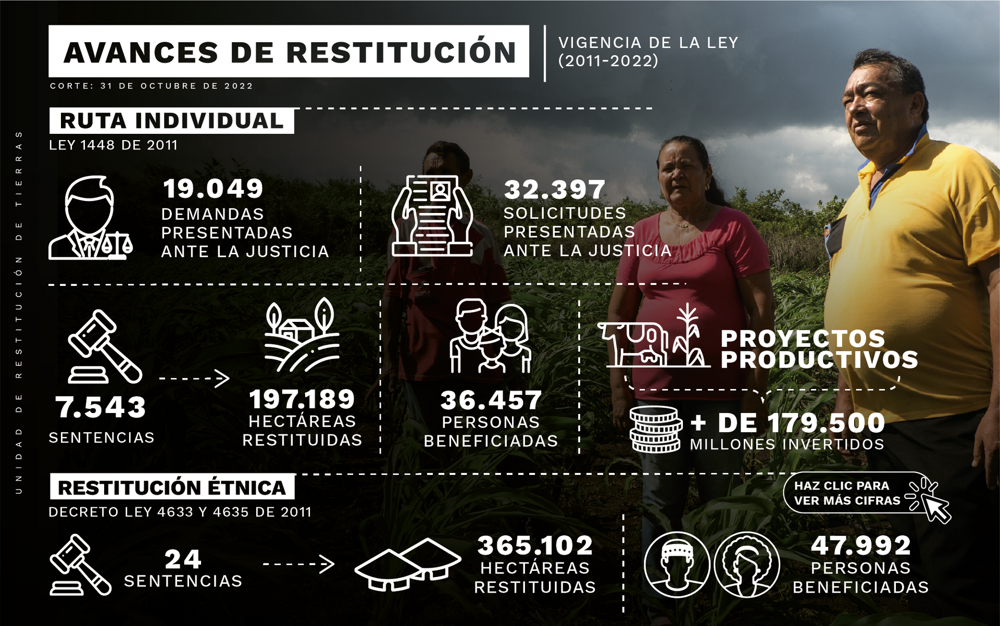

El desplazamiento forzado ha desgarrado pueblos y comunidades en toda Colombia en los últimos treinta años. Millones de personas se han visto forzadas a desplazarse dentro y fuera del territorio nacional, obligándolas a abandonar sus hogares, sus tierras, sus bienes y sus costumbres. Esta sección recoge esas historias, de dolor, miedo y nostalgia, pero también de resistencia y dignidad; recoge los testimonios de algunos colombianos que han sido despojados y de sus despojadores.
"Me tocó irme, porque entraron y se apoderadon de nuestra tierra"
"O se van o los matamos a todos"
VÍCTIMAS
VÍCTIMAS
"Cuando llegaban los armados agarrábamos la maleta y ¡córrale con los pollitos por donde se pueda! Eso hace una mamá desplazada. Salir corriendo. Adelante los pollos porque atrás peligran." Patricia Peña
"Nosotros dejamos la tierra toda abandonadita y la casa también, esa gente cuando llegó, empezó a tumbar todo, hasta la puerta y lo poco que teníamos en la casa lo rompieron y nos volvieron nada todo eso. Perdimos gallinas, bestias y mulas" Rodrigo Arias
"Me dijeron que si no pagaba la tierra me la quitaba. Este señor (paramilitar) sacó la pistola y la puso en la mesa y dijo esas mismas palabras 'a las buenas o las malas negociábamos la tierra'. Me tocó pagar." Ricardo Morales
“Un supuesto guerrillero me puso la pistola en la cabeza en la sede de Sintraproaceites y 15 días después volvió y me la colocó en el mismo predio (..) yo dije ´no, yo tengo que irme, porque ya no aguanto más´”. Ricaurte Baudillo
VICTIMARIOS
VÍCTIMARIOS
Rodrigo Tovar "Jorge 40" Excomandante paramilitar
Cientos de campesinos perdieron sus tierras a manos de ‘Jorge 40’ "los hombres de Jorge 40 fueron los que les quitaron las tierras y que todavía algunas están en poder de los amigos del exjefe paramilitar" cuenta un campesino víctima de despojo.
Los Castaño Hermanos paramilitares
Los hermanos Fidel, Vicente y Carlos Castaño despojaron a miles de familias de sus tierras en Córdoba. “Soy víctima desde 1989 de los Castaño, ellos nos despojaron de las tierras, asesinaron familias, nos hicieron mucho daño, siempre se identificaron como miembros del ‘Clan Castaño’” Tarcila Moreno, víctima de despojo.
Benito osorio Exgobernador de Córdoba
"El campesino salía e inmediatamente ellos le metían candela a las casas, evitando que el campesino volviera a las tierras (...) Una acción que la hizo el fondo ganadero y la hice yo porque me gustaba ver la candela sobre esas chozas donde vivían los campesinos"
"Llegamos a esa región, enfrentamos la guerrilla (...) empezamos a llamar a los campesinos. Les dijimos: vengan, quién quiere vender, necesitamos comprar estas tierras (..) y se compraron miles de hectáreas en la región. Muchas personas vendieron asustados, obligados, a 25 mil pesos hectáreas, una cosa absurda"
Salvatore Mancuso Gómez Exjefe paramilitar

"Me llamaron un 30 de mayo (de 2017, que el 6 de junio tenía que estar acá presente que me iban a recoger ahí en la Estación de Policía de Becerril adonde venían a entregarme mi pedacito de tierra. Una bendición para mí, una alegría cuando me recogieron ahí y vinieron acá, me entregaron mí título ... yo me sentí que volví a nacer, dije ‘volvió la vida de mis hijos y volvió la vida mía’”
Rosa María Soracá
Beneficiaria de restitución de tierras
"Yo fui a buscar una camioneta, empaqué mis chécheres…a una nómada ¿qué le importa? Yo cargaba tres hamacas, la de las dos hijas y la mía, cuando yo pisé mi tierra esa fue la emoción, lo primero que sembré fue un palo de mango"
Nelly Madrid
Beneficiaria de restitución de tierras
"Yo ese día que supe que había ganado yo lloré –confiesa Irene–, le digo que para mí fue como si hubiera nacido de nuevo, yo lloraba de alegría y fui (y) abracé a los que vinieron, les dije ´mire, Dios los guarde, los acompañe, que yo no tengo cómo darles a ustedes tanta gratitud por lo que ustedes han hecho (por) mí´”
Irene Montañez
Beneficiaria de restitución de tierras
"¿Ustedes aceptan voluntariamente recibir este predio?’ –cuenta Andrés que le preguntó el juez a la familia–, y obviamente le dije a mi mamá ´sí, este es el predio de nosotros´, estamos a cinco minutos de San Pedro, cinco minutos de Tuluá, 15 minutos de Buga, Andalucía, Río Frío y Trujillo, es el corazón del Valle, o sea, es un sitio estratégico. Y no solamente a usted le entregan una tierra, sino que también le dicen ´mire le vamos a ayudar para que usted cultive este tierra, un capital semilla para que usted trate de irlo impulsando´"